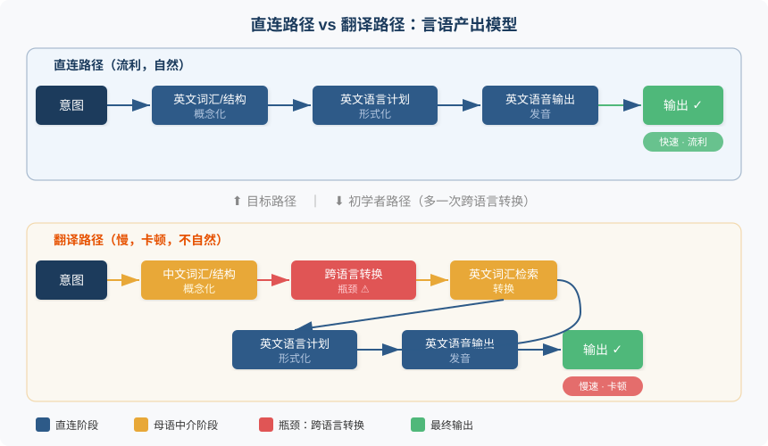
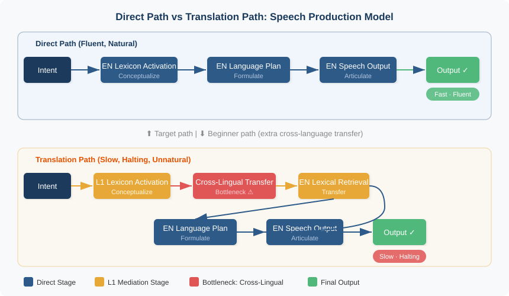

第六章：说与写，把意表达出去
Output: Expressing Meaning
"How do I know what I think until I see what I say?" — E. M. Forster
核心问题：如何让脑中的「意」直接以英文的方式流出，而不是先组织成中文再翻译？
6.1 两分钟的崩塌
我的论文被一个国际会议录用后，花了两周准备发言稿。逐字写好英文讲稿，反复朗读到脱口而出，对着镜子练了手势和眼神。发言那天，PPT 切换流畅，语速适中，几乎像母语者。
掌声响起。然后主持人说："We have time for two questions."
第一个问题我完全没预料到："Your simulation assumes ideal channel conditions. How would your results change under realistic fading?"
大脑瞬间切回中文模式。先在心里翻译问题（"他问的是信道衰落的影响"），再用中文组织答案（"我应该说仿真条件确实是理想的，但我们的方法可以扩展到……"），然后逐句翻译成英文。结果磕磕巴巴说了一段冗长且不连贯的回答。台下听众礼貌地点头，但那些点头里没有信服。
回到酒店我写下一句话：准备好的内容我能"表演"英文，但即兴表达时，英文输出通路根本没有建立。
这不是个例，而是大多数中国英语学习者的困境。输入端可以很强，输出端却始终脆弱。你可能读过上百本英文技术书，听过上千小时英文播客。但轮到自己开口或动笔，大脑像一台硬盘塞满数据但 CPU 过载的电脑：存储了大量语言素材，却无法实时调用。
前一章讨论了如何让意以英文方式"进来"。这一章解决另一半：如何让意以英文方式"出去"。先从 Swain 的输出假说开始，理解为什么输出不可替代。然后拆解"说"和"写"两种输出模式的认知机制与训练策略。最后面对一个被过度放大的恐惧：犯错。
6.2 Swain 的输出假说：为什么只听不说不够
输入假说（Input Hypothesis）告诉我们：只要接收足够多"可理解的输入"，语言能力就会自然发展。这个观点长期主导了二语习得（Second Language Acquisition）研究，也深刻影响了教学实践。很多老师和学习者信奉"多听多读自然会"。
但 Swain 在 1985 年观察了加拿大法语沉浸式教学项目（French immersion program），发现了一个重要反例。那些学生在法语环境中浸泡了多年，每天用法语上课、听讲、做作业，听力和阅读能力确实发展得很好。然而口语和写作远未达到母语水平：语法错误频出，表达方式单一，复杂观点说不清楚。他们接收了海量可理解输入，为什么产出能力还是不行？
原因在于：理解语言和产出语言对大脑的要求完全不同。听懂一个句子，只需抓住关键词和语境推断意义，大脑可以"偷懒"，跳过不认识的词也不影响整体理解。但说出一个句子，你必须精确选择词汇、组织语法、控制时态、安排语序，每一个环节都不能省略。
看别人弹钢琴和自己弹钢琴是两回事。你能听出旋律、节奏、情感，但坐到琴凳上，手指会告诉你：理解和产出之间隔着一道深渊。
Swain 由此提出了可理解输出假说（Comprehensible Output Hypothesis）：学习者必须被推向产出语言的境地，才能触发某些输入无法替代的认知过程。她识别出输出的三个独特功能。
注意功能（Noticing Function）。 当你试图说或写一个英文句子时，你会在实时过程中发现自己"不会说"的部分。Swain 称之为"意识到缺口"（noticing the gap）。你不知道自己不会什么，直到你试图说出来。
假设检验功能（Hypothesis Testing）。 每一个说出口或写下来的句子，都是关于语言规则的一个假设。你说 "I suggest to change the plan"，对方回复 "You mean you suggest changing the plan?" 你刚学到 suggest 后面跟动名词而非不定式。对方皱了眉？你的假设可能错了。对方准确回应了你的意思？假设得到验证。输出把语言学习从被动接收变成了主动实验。
元语言功能（Metalinguistic Function）。 输出促使你反思语言形式本身。写邮件时停下来想"这里该用 which 还是 that"，对话中犹豫"应该说 I was used to 还是 I used to"，你做的不只是交际，而是对语言结构的有意识分析。这种反思深化了对语言系统的理解，单纯的输入很少触发这个层级的思考。
这三个功能解释了一个常见现象：很多人听力很好、阅读很强，一开口就暴露短板。不是因为"学得不够多"，而是从未被迫产出。输出端的通路从未被真正激活。
打个比方。输入像往水池里注水，输出像从水池里放水。你可以往池子里注入一万升，但如果出水口从未打开，管道积满了锈。真到需要用水的时候，拧开龙头出来的只有浑浊的涓涓细流。只有反复使用出水口，管道才会被冲刷通畅。
6.3 说：从"翻译式说英语"到"用英文表达意"
说话是人类最复杂的运动行为之一。没有任何一项体育运动需要在 200 毫秒内协调上百块肌肉，同时进行高速认知决策。从产生"想说点什么"的意图到声音离开嘴巴，大约只有 200 到 300 毫秒。在这极短的时间里，大脑完成了一整套流水线作业。
Levelt（1989）提出的言语产出模型（Speech Production Model）将这条流水线拆成三个阶段。概念化（Conceptualization）：你决定要表达什么"意"，选择信息、组织逻辑。形式化（Formulation）：将"意"编码为具体的词汇和语法结构，生成内部语言计划。发音（Articulation）：将语言计划转化为肌肉运动，发出声音。
de Bot（1992）将这个模型扩展到双语场景，揭示了一个关键区别：语言选择发生在哪个阶段，决定了输出的效率和质量。
直连式说英语。 概念化阶段直接激活英文的词汇和结构，形式化在英文系统内完成，整条通路一气呵成。你想到"表达感谢"这个意，大脑直接调出 "I really appreciate it"，不经过中文中介。
翻译式说英语。 概念化阶段在中文系统中完成，形式化阶段被迫进行跨语言转换。你先想到"我真的很感谢"，再试图翻译成英文。多出来的这一步不只是"慢"，还会扭曲输出结构，因为中文的句法框架已经在概念化阶段把思路塑形了。

翻译路径多了一个完整的中间阶段。日常寒暄这样认知负荷低的场景，额外步骤尚可承受。但在会议讨论、即兴演讲、辩论反驳这类需要快速思考的场景中，翻译路径会崩溃。你的工作记忆（Working Memory）同时维持中文结构和英文转换，留给"想说什么"的空间几乎为零。
这正是我在那次会议 Q&A 环节遭遇的问题。准备好的发言之所以流畅，是因为那些内容已经被反复练习到程序性记忆（Procedural Memory）中，不需要实时概念化和形式化。但面对一个新问题，大脑必须走完整的产出流水线，而我唯一练过的流水线是翻译路径。结果可想而知。
口语实用策略
自言自语法（Self-Talk）。 独处时用英文描述你正在做的事、看到的东西、想到的事。做饭时说 "I'm chopping the onions, now I need to heat the pan"；走路时说 "It's cloudy today, looks like it might rain"；看完一段新闻说 "That's interesting, I didn't know inflation was still rising"。不需要完美，不需要复杂句。关键是让"意→英文"的通路在无压力环境中反复激活。每一次激活都在加强这条神经通路，就像森林里的小径，走的人多了就变成了路。
影子跟读法（Shadowing）。 选一段母语者的音频（播客、TED 演讲、有声书），边听边同步模仿。不是"听完一句再重复"，而是几乎同时说出来，像影子一样紧跟。不追求理解每个词，重点是让口腔肌肉和大脑之间建立英文语音的程序性记忆。这和学乐器一样：先让手指"记住"动作，理解可以后来。
影子跟读的独特价值在于它同时训练了听力解码、语音产出和语调节奏三个子系统。初期你可能只能跟上 30% 的内容，完全正常。随着练习深入，某些高频短语（如 "the thing is""it turns out""what I mean is"）会开始像肌肉反射一样自动蹦出来。这正是程序性记忆在形成。
即兴表达训练。 给自己一个随机话题，限时两分钟用英文说。三条铁律：不准备、不翻译、不停顿超过五秒。说得烂没关系，语法错了没关系，找不到词用简单词替代也没关系。目的只有一个：训练"意→英文"的即时输出能力，让大脑习惯在没有中文拐杖的情况下直接产出英文。
为什么是两分钟？因为这个时长足以让"翻译缓冲区"耗尽。头三十秒你可能还能靠翻译撑住，但一分钟之后翻译路径来不及了，大脑会被迫尝试直连。那个笨拙但珍贵的时刻，就是新通路开始被铺设的时刻。
6.4 写：写作即思考
很多人把写作理解为"把想好的话写下来"。这是根本性的误解。写作不是记录思考的结果，写作本身就是思考。
Bereiter 和 Scardamalia（1987）提出了两种截然不同的写作模式。
知识转述（Knowledge Telling）。 把已经知道的内容按顺序倒出来，像倒水一样。脑子里有什么就写什么，不需要重新组织。写的过程不改变你对内容的理解。
知识转化（Knowledge Transforming）。 通过写作重新组织、质疑和深化对内容的理解。写着写着你会发现"不对，这个论点需要一个前提我还没交代"，于是回头补上。这个"回头补上"的动作恰恰深化了思考。
翻译式英文写作本质上就是知识转述：先用中文想好内容，再逐句翻译成英文。结果是英文的句子，中文的逻辑。真正有价值的英文写作是知识转化：用英文的逻辑框架来组织"意"，写的过程重塑思维本身。
英文写作有一套底层逻辑，不只是"写作技巧"，而是英文思维方式的具象化。段落层面：主题句（Topic Sentence）→ 支撑细节（Supporting Details）→ 小结（Conclusion）。论证层面：主张（Claim）→ 证据（Evidence）→ 推理（Reasoning）。动笔之前，你得回答三个问题。核心论点是什么？证据是什么？它们之间的逻辑关系是什么？
用英文写作时，这些结构会迫使你重新审视自己的想法。中文里觉得"说得通"的逻辑，用英文写出来后可能漏洞百出。为什么？因为中文允许"意在言外"的含蓄表达，英文要求你把每一步推理摆在明面上。这不是英文在为难你，是线性论证结构逼你把模糊的想法变清晰。
举个例子。一位工程师想写邮件建议团队换一个技术方案。中文思维可能是："现在这个方案性能不太好，而且维护起来很麻烦，我觉得换一个比较好。"结论在最后，理由是罗列式的，逻辑连接靠直觉。英文思维的版本："I recommend switching to Plan B (主张). Our benchmarks show a 40% latency reduction (证据). This matters because our SLA requires sub-100ms response times (推理)."主张在前，证据紧跟，推理收尾。两种表达承载的"意"相同，但组织方式截然不同。
写作实用策略
自由写作法（Freewriting）。 设定十分钟，用英文不停地写。规则只有一条：笔不能停（或者手指不能离开键盘）。不回头改、不查字典、不翻译、不在乎语法。实在不知道写什么就写 "I don't know what to write but I need to keep writing"。写什么都行：今天的心情、窗外的风景、对某件事的看法、昨晚做的梦。目标是让"意→英文"的输出通路在低压力下反复练习。
Peter Elbow 在推广自由写作法时强调：写作中最大的障碍不是能力不足，而是内心的"编辑者"过早介入。自由写作暂时关闭这个内心编辑者，让思维和语言自由流动。对英语学习者来说，这个"编辑者"往往就是那个要把每句话先翻译成中文再检查一遍的内在声音。
英文日记。 每天写三到五句英文日记。关键原则：不是翻译中文日记，而是直接用英文回忆和描述当天发生的事。闭上眼睛回想一个场景，然后用英文写下来。
"Today I had a long meeting that could have been an email" 比先想"今天开了一个很长的会其实发个邮件就行了"再翻译更有训练价值。前者是英文思维的直接产物，后者是中文思维的搬运工。前者在英文系统内完成了从意到文字的全过程，后者只是把成品从中文工厂搬到了英文仓库。
仿写法（Imitation Writing）。 读一段你喜欢的英文段落，可以是一篇社论、一段小说、一封优秀的商业邮件。读完合上，用自己的英文重新表达同样的"意"。然后打开原文对比。差异处就是你需要强化的地方：也许是词汇搭配，也许是句式选择，也许是信息的组织顺序。这比纯粹的语法练习有效得多，因为你在真实语境中看到了"我的英文"和"地道英文"的具体差距。
6.5 错误的价值：输出不完美是常态
问中国学习者为什么不愿开口说英文、不愿动笔写英文，排名第一的回答大概率是：怕犯错。怕语法错被笑话，怕发音不准被纠正，怕用词不当产生误解。这种恐惧如此强烈，很多人宁可沉默也不愿冒"出丑"的风险。
可以理解。中国的教育体系长期将错误等同于"不合格"，考试中每一个错误都意味着扣分。但它在认知层面是有害的。回顾 Swain 的输出假说：注意功能的触发器恰恰是"发现自己说错了"，假设检验的触发器恰恰是"说出的句子被现实纠正了"。如果你从不犯错，这两个功能就从未被激活。不犯错的人不是学得好，是没在学。
Corder（1967）在经典论文《学习者错误的意义》（The Significance of Learner's Errors）中提出了一个颠覆性观点：学习者的错误不是无能的证据，而是中介语（Interlanguage）发展阶段的反映。中介语是学习者在母语和目标语之间构建的过渡性语言系统，有自己的内部逻辑，会随着学习深入不断演化。
错误是这个系统在生长过程中的正常震荡。就像孩子学走路时摔跤，没有哪个孩子直接从爬行跳到完美步行。如果一个孩子因为怕摔而拒绝站起来，他永远学不会走路。英语输出的逻辑完全一样。
实用态度浓缩为一句话：追求流畅但不完美（fluent but imperfect），而不是正确但缓慢（correct but slow）。流畅性先于准确性。原因很简单：流畅的输出给你更多练习机会，更多练习带来更多反馈，更多反馈推动准确性自然提升。反过来，"正确但缓慢"的策略让每次输出都经过层层审查，输出频率极低，通路得不到足够激活。
想象两位游泳初学者。A 只在确保姿势完美时才下水，一周游一次。B 每天跳进泳池扑腾，姿势丑陋但不停地游。一个月后 B 的泳姿可能仍不标准，但他已经能游几百米了。A 的每一划或许优雅，但他还在浅水区。频率比完美度重要得多。
这不是说准确性不重要。而是在建立输出通路的阶段，流畅性是优先级更高的目标。先让水流起来，再慢慢净化水质。
6.6 🔬 语言实验：三分钟即兴表达
这个实验只需要一部手机和三分钟时间。
步骤一： 打开手机录音功能。
步骤二： 从以下话题中随机选一个（或自己想一个）：今天的天气、你对某条新闻的看法、你最近读的一本书、你最喜欢的一道菜怎么做。
步骤三： 按下录音，用英文说三分钟。三条铁律：不准备、不翻译、不停顿超过五秒。卡住了就换个说法，找不到词就用简单词替代，说错了不要回头纠正，继续往前走。
步骤四： 回听录音。注意，目的不是纠错。你要观察的是：哪些地方"意→英文"很流畅，话自然地流出来了？哪些地方能感觉到"中文在插手"，你在心里先想了中文再尝试翻译？
步骤五： 每周做一次。不需要每次都进步，只需要持续观察。建一个简单的日志，记录两个指标：这次流畅片段的最长持续时间，以及中文明显"插手"的次数。几周之后你会发现流畅的片段在变长，中文插手的频率在下降。这就是直连通路在逐渐建立的证据。
第一次做这个实验时，你可能觉得三分钟非常漫长。很正常。大脑正在尝试激活一条尚未通畅的通路，它会抗议。坚持下去。不适感本身就是学习正在发生的信号。
6.7 总结与过渡
这一章的核心论点浓缩为三句话：
- 输出不可替代。 输入让你理解语言，但只有输出才能迫使你产出语言。注意缺口、检验假设、反思形式，这三个功能是输入无法提供的。
- 说的本质是实时编码。 从意到语音，200 毫秒内完成。翻译路径在这个时间窗口内多加了一个中间步骤，导致要么慢、要么崩溃。训练目标是让概念化阶段直接激活英文系统。
- 写的本质是用英文思考。 不是把中文翻译成英文句子，而是用英文的逻辑结构来组织意。主题句、论证链、线性推理。写作改变思维，不只是记录思维。
错误不是敌人，而是通路建设中的正常成本。流畅性先于准确性，先让输出流动起来。
到此为止，我们从输入（第五章）和输出（本章）两端探讨了如何绕过中文、建立"意↔英文"的直连通路。但回顾前六章，会发现一个贯穿始终的隐含立场：中文是阻碍，应该被绕过。
这真的对吗？中文是你的母语，你用它思考了二十年、三十年，难道在英语学习中只能扮演拖后腿的角色？在学习的某些阶段，中文是否反而能发挥独特的积极作用？如果能，界限在哪里？第七章将直面这个问题：中文在英语学习中到底应该扮演什么角色。
参考文献
-
Swain, M. (1995). Three functions of output in second language learning. In G. Cook & B. Seidlhofer (Eds.), Principle and Practice in Applied Linguistics: Studies in Honour of H. G. Widdowson (pp. 125–144). Oxford University Press. 可理解输出假说的成熟表述，系统阐述输出的注意、假设检验和元语言三大功能。
-
Levelt, W. J. M. (1989). Speaking: From Intention to Articulation. MIT Press. DOI: 10.7551/mitpress/6393.001.0001. 言语产出模型的奠基之作，将说话过程拆解为概念化、形式化和发音三个阶段。
-
Bereiter, C., & Scardamalia, M. (1987). The Psychology of Written Composition. Lawrence Erlbaum Associates. 提出知识转述与知识转化两种写作模式，揭示专家写作者与新手的核心差异在于写作过程中的认知深度。
-
Corder, S. P. (1967). The significance of learner's errors. International Review of Applied Linguistics in Language Teaching, 5(4), 161–170. DOI: 10.1515/iral.1967.5.1-4.161. 错误分析理论的开山之作，将学习者错误从"需要纠正的偏差"重新定义为"中介语发展的窗口"。
-
de Bot, K. (1992). A bilingual production model: Levelt's 'Speaking' model adapted. Applied Linguistics, 13(1), 1–24. DOI: 10.1093/applin/13.1.1. 将 Levelt 言语产出模型扩展到双语场景，分析双语者在概念化和形式化阶段的语言选择机制。
-
Swain, M., & Lapkin, S. (1995). Problems in output and the cognitive processes they generate: A step towards second language learning. Applied Linguistics, 16(3), 371–391. DOI: 10.1093/applin/16.3.371. 通过实证研究展示输出任务如何触发学习者对语言形式的注意和反思，为输出假说提供实验证据。
Chapter 6: Output — Expressing Meaning
"How do I know what I think until I see what I say?" — E. M. Forster
Core question: How can the yì (pre-linguistic meaning-intention) in our minds flow directly into English, rather than first being organized in Chinese and then translated?
6.1 Two Minutes of Collapse
After my paper was accepted at an international conference, I spent two weeks preparing the presentation. I wrote the script word for word in English, read it aloud until it rolled off my tongue, and practiced gestures and eye contact in front of a mirror. On the day of the talk, slides advanced smoothly, my pace was measured, and I sounded almost like a native speaker.
Applause. Then the moderator said: "We have time for two questions."
The first question blindsided me: "Your simulation assumes ideal channel conditions. How would your results change under realistic fading?"
My brain instantly switched back to Chinese. First I translated the question internally: "He's asking about the impact of channel fading." Then I assembled an answer in Chinese: "I should say the simulation conditions are indeed ideal, but our approach can be extended to..." Then I began translating that answer sentence by sentence into English. The result was a halting, rambling reply. The audience nodded politely, but those nods held no conviction.
Back at the hotel I wrote one sentence: I can "perform" English with prepared content, but for impromptu expression, my English output pathway simply hasn't been built.
This isn't an isolated case. It's the predicament of most Chinese English learners. The input side can be strong; the output side stays fragile. You may have read hundreds of English technical books and listened to thousands of hours of podcasts. But when it's your turn to speak or write, your brain behaves like a computer with vast storage but an overloaded CPU: plenty of language data in memory, none of it available for real-time production.
The previous chapter discussed how to let yì come in through English. This chapter addresses the other half: how to let yì go out through English. We'll start with Swain's Output Hypothesis to understand why output can't be replaced. Then we'll unpack the cognitive mechanisms and training strategies for speaking and writing. Finally, we'll face an overblown fear: making mistakes.
6.2 Swain's Output Hypothesis: Why Listening Alone Isn't Enough
The Input Hypothesis tells us that with enough comprehensible input, language ability develops naturally. This view long dominated second-language acquisition research and deeply influenced teaching practice. Many teachers and learners trust that "more listening and reading will take care of it."
But Swain (1985), observing Canadian French immersion programs, found a telling counterexample. Those students had spent years soaked in a French-medium environment: lessons, lectures, and homework all in French. Their listening and reading developed well. Their speaking and writing, however, fell far short of native-like levels: frequent grammar errors, limited expressive range, and difficulty articulating complex ideas. They'd received massive comprehensible input. Why was their production still weak?
The answer is simple: understanding language and producing it place very different demands on the brain. To understand a sentence, you only need key words and contextual inference. The brain can cut corners, skip unfamiliar words, and still grasp the whole. To produce a sentence, you must choose vocabulary precisely, organize grammar, control tense, and arrange word order. Every step counts. There are no shortcuts.
It's like watching someone play the piano versus playing it yourself. You can hear melody, rhythm, and emotion. But sit down at the keyboard, and your fingers tell you: there's a chasm between comprehension and production.
From this, Swain proposed the Comprehensible Output Hypothesis: learners must be pushed to produce language in order to activate cognitive processes that input alone can't trigger. She identified three distinct functions of output.
The Noticing Function. When you try to say or write an English sentence, you discover in real time what you can't express. Swain calls this "noticing the gap." You don't know what you don't know until you try to say it.
The Hypothesis-Testing Function. Every sentence you utter or write is a hypothesis about language rules. You say "I suggest to change the plan," and the other person replies "You mean you suggest changing the plan?" You just learned that suggest takes a gerund, not an infinitive. A puzzled look from your listener? Your hypothesis may be wrong. A precise response matching your meaning? Hypothesis confirmed. Output turns language learning from passive reception into active experimentation.
The Metalinguistic Function. Output pushes you to reflect on linguistic form itself. When you pause while writing to wonder "should this be which or that?", when you hesitate in conversation between "I was used to" and "I used to," you aren't only communicating. You're consciously analyzing language structure. This level of reflection rarely gets triggered by input alone.
These three functions explain a common pattern: strong listening and reading, weak speaking and writing. The problem usually isn't that people "haven't learned enough." It's that they were never pushed to produce. Their output pathways were never truly activated.
Think of it this way. Input is filling a reservoir; output is drawing water from it. You can pour in thousands of liters, but if the outlet has never been opened, the pipes rust shut. Turn the tap and you get a murky trickle. Only repeated use flushes the pipes clean.
6.3 Speaking: From "Translation-Based Speaking" to "Expressing Yì in English"
Speaking is one of the most complex motor behaviors humans perform. No sport requires coordinating hundreds of muscles within 200 milliseconds while making high-speed cognitive decisions. From the intention to "say something" to the sound leaving your mouth takes roughly 200 to 300 ms. In that brief window, the brain runs a full production pipeline.
Levelt's (1989) Speech Production Model breaks this pipeline into three stages. Conceptualization: you decide what yì to express, selecting information and organizing logic. Formulation: you encode that yì into specific vocabulary and grammar, generating an internal linguistic plan. Articulation: you convert that plan into muscle movements that produce speech.
De Bot (1992) extended this model to bilingual settings and revealed a crucial distinction: where language choice happens determines the efficiency and quality of output.
Direct-path speaking. Conceptualization directly activates English vocabulary and structure. Formulation happens entirely within the English system. The whole pipeline flows in one pass. You think "express gratitude" as yì, and the brain retrieves "I really appreciate it" with no Chinese mediation.
Translation-path speaking. Conceptualization occurs in the Chinese system. Formulation is forced to perform cross-linguistic conversion. You first think "我真的很感谢," then try to translate it into English. This extra step isn't just slower; it distorts your output structure, because the Chinese syntactic frame has already shaped your thoughts during conceptualization.

The translation path adds an entire intermediate stage. In low cognitive-load situations like casual chat, this extra step is manageable. But in high-load situations (meeting discussions, impromptu talks, debate rebuttals), the translation path breaks down. Your working memory is juggling Chinese structure and English transfer simultaneously, leaving almost no room for "what am I actually trying to say?"
This is exactly what I hit during that conference Q&A. My prepared talk was fluent because the content had been rehearsed into procedural memory; no real-time conceptualization or formulation was required. Facing a new question, my brain had to run the full production pipeline, and the only pipeline I'd ever practiced was the translation path. The outcome was predictable.
Practical Strategies for Speaking
Self-Talk. When you're alone, describe in English what you're doing, seeing, and thinking. While cooking: "I'm chopping the onions, now I need to heat the pan." While walking: "It's cloudy today, looks like it might rain." After reading a news item: "That's interesting, I didn't know inflation was still rising." It doesn't need to be perfect or complex. The point is to repeatedly activate the yì-to-English pathway in a low-pressure setting. Each activation strengthens the neural circuit, like a path through the woods that becomes a trail the more people walk it.
Shadowing. Choose a native-speaker audio clip (podcast, TED talk, audiobook) and mimic in real time. Not "listen then repeat," but speak almost simultaneously, shadowing the voice. Don't strive to understand every word; the goal is to build procedural memory for English phonetics between your articulators and your brain. Like learning an instrument: first let your fingers "remember" the motions; understanding can come later.
Shadowing's unique value is that it trains three subsystems at once: auditory decoding, speech production, and prosody. At first you might keep up with only 30% of the content. That's normal. With practice, high-frequency phrases ("the thing is," "it turns out," "what I mean is") begin to surface like reflexes. That's procedural memory forming.
Impromptu Expression Training. Give yourself a random topic and speak in English for two minutes. Three rules: no preparation, no translation, no pauses longer than five seconds. Poor delivery is fine. Grammar mistakes are fine. Substituting simple words when you're stuck is fine. The sole aim is to train immediate yì-to-English output and get the brain used to producing English without the Chinese crutch.
Why two minutes? Because that's enough time to exhaust your "translation buffer." For the first thirty seconds you might still rely on translation, but after a minute the translation path can't keep up. The brain is forced to try the direct path. That awkward but precious moment is when a new neural pathway starts to get laid.
6.4 Writing: Writing Is Thinking
Many people treat writing as "putting down what you've already thought." That's a fundamental misconception. Writing doesn't record the result of thinking. Writing is thinking.
Bereiter and Scardamalia (1987) distinguished two radically different modes of writing.
Knowledge Telling. You pour out what you already know in sequence, like emptying a jug. Whatever's in your head goes on the page, with little restructuring. The act of writing doesn't change your understanding of the content.
Knowledge Transforming. Through writing you reorganize, question, and deepen your understanding. Writing alters what you know. As you write, you may realize "wait, this argument needs a premise I haven't stated" and go back to add it. That process of going back deepens your thinking.
Translation-based English writing is essentially knowledge telling: think the content in Chinese first, then translate sentence by sentence. The result is English sentences with Chinese logic. Genuinely valuable English writing is knowledge transforming: using English's logical framework to organize yì, so the process of writing reshapes thought itself.
English writing has an underlying logic. It's not just "writing technique"; it's the concrete form of English ways of thinking. At the paragraph level: topic sentence → supporting details → conclusion. At the argument level: claim → evidence → reasoning. Before writing, you need to answer three questions. What's my central claim? What's my evidence? What's the logical relationship between them?
When you write in English, these structures force you to reexamine your ideas. Logic that "felt fine" in Chinese may collapse once written in English. Why? Because Chinese tolerates "meaning beyond words" (意在言外), while English expects each step of reasoning to be made explicit. That isn't English being difficult. It's linear argument structure pushing you to clarify vague thoughts.
An example. An engineer wants to email colleagues recommending a different technical approach. Chinese-style thinking might be: "The current approach doesn't perform well, maintenance is a hassle, I think switching would be better." Conclusion at the end, reasons listed, logic implied. English-style thinking: "I recommend switching to Plan B (claim). Our benchmarks show a 40% latency reduction (evidence). This matters because our SLA requires sub-100ms response times (reasoning)." Claim up front, evidence next, reasoning to close. Both convey the same yì; the organization is radically different.
Practical Strategies for Writing
Freewriting. Set a timer for ten minutes and write continuously in English. One rule: the pen must keep moving (or fingers on the keyboard). No going back to edit, no dictionary, no translation, no worrying about grammar. If you don't know what to write, write "I don't know what to write but I need to keep writing." Write about anything: today's mood, the view outside, an opinion on something, last night's dream. The goal is to practice the yì-to-English output pathway under low pressure.
Peter Elbow, who popularized freewriting, argued that the biggest obstacle to writing isn't lack of skill but the inner "editor" cutting in too early. Freewriting temporarily silences that editor and lets thought and language flow. For English learners, that editor is often the inner voice insisting on translating each sentence into Chinese and checking it before committing.
English Journal. Write three to five English sentences every day. Critical rule: don't translate from a Chinese diary. Recall and describe the day's events directly in English. Close your eyes, recall a scene, then write it down.
"Today I had a long meeting that could have been an email" has far more training value than first thinking "今天开了一个很长的会其实发个邮件就行了" and then translating. The first is a direct product of English thinking; the second is Chinese thinking delivered in English packaging. The first completes the full journey from yì to text within the English system; the second just moves a finished product from the Chinese factory to the English warehouse.
Imitation Writing. Read a paragraph you admire: an editorial, a novel excerpt, an excellent business email. Close the text and express the same yì in your own English. Then reopen the original and compare. The differences reveal where you need to improve: perhaps collocation, perhaps sentence structure, perhaps the order of information. This is more effective than pure grammar drills because you see concretely how "my English" diverges from "idiomatic English" in real context.
6.5 The Value of Error: Imperfect Output Is the Norm
Ask Chinese learners why they hesitate to speak or write in English and the most common answer is: fear of mistakes. Fear of grammar errors and mockery, fear of mispronunciation and correction, fear of miscommunication from poor word choice. That fear is so strong that many prefer silence to the risk of "looking foolish."
The fear is understandable. China's education system has long treated errors as signs of failure; each mistake on an exam means points deducted. But at the cognitive level, this fear is harmful. Revisit Swain's Output Hypothesis: the noticing function is triggered precisely when you discover you said something wrong; the hypothesis-testing function is triggered precisely when your utterance gets corrected by reality. If you never make mistakes, these functions never activate. People who never err aren't learning well. They're not learning at all.
Corder (1967), in his classic paper "The Significance of Learner's Errors," argued that learner errors aren't proof of incompetence but reflections of their interlanguage: the transitional language system learners build between their L1 and the target language. Interlanguage has its own internal logic and evolves as learning deepens.
Errors are normal oscillations in that system's growth. Think of a child learning to walk. No child goes from crawling to flawless walking. There will be stumbles, staggers, wrong turns. If a child refuses to stand for fear of falling, they'll never learn to walk. The logic of English output is the same.
A practical stance, in one line: aim for fluent but imperfect, not correct but slow. Fluency before accuracy. The reason is simple: fluent output gives you more practice; more practice yields more feedback; more feedback drives accuracy upward naturally. The "correct but slow" strategy subjects every output to scrutiny, reducing frequency and leaving the pathway under-activated.
Imagine two swimming beginners. A only enters the water when posture is perfect, swimming once a week. B jumps in daily and thrashes around, ugly form but constant motion. After a month, B may still swim with poor technique but can cover hundreds of meters. A's strokes may look elegant, but A remains in the shallow end. Frequency matters far more than perfection.
This isn't to say accuracy doesn't matter. It's to say that in the phase of pathway-building, fluency is the higher priority. First let the water flow; then work on purification.
6.6 Language Experiment: Three-Minute Impromptu Speaking
This experiment requires only a phone and three minutes.
Step 1: Turn on voice recording.
Step 2: Pick a topic at random from the list below (or invent one): today's weather; your view on a recent news story; a book you read recently; how to make your favorite dish.
Step 3: Start recording and speak in English for three minutes. Three rules: no preparation, no translation, no pauses longer than five seconds. Stuck? Rephrase. Can't find a word? Use a simpler one. Made a mistake? Don't go back to correct. Keep going.
Step 4: Listen to the recording. The aim isn't error-correction. Observe: where did the yì-to-English flow run smoothly, with words coming naturally? Where could you feel "Chinese stepping in," with you thinking in Chinese first and then trying to translate?
Step 5: Do this once a week. You don't need to improve every time; just keep observing. Keep a simple log with two metrics: the longest stretch of fluent output, and how often Chinese clearly stepped in. After a few weeks you'll notice: fluent stretches lengthen, Chinese intrusions decrease. That's evidence of the direct pathway taking shape.
A note: the first time you try this, three minutes may feel very long. That's normal. Your brain is trying to activate a pathway that isn't yet clear, and it will resist. Stay with it. The discomfort itself is a sign that learning is happening.
6.7 Summary and Transition
This chapter's core arguments condense into three sentences:
- Output can't be replaced. Input lets you understand language, but only output pushes you to produce it. Noticing gaps, testing hypotheses, reflecting on form: those three functions can't be provided by input alone.
- Speaking is real-time encoding. From yì to speech in about 200 milliseconds. The translation path inserts an extra step into that window, leading to slowness or breakdown. The training goal is to have conceptualization directly activate the English system.
- Writing is thinking in English. Not translating Chinese into English sentences, but using English's logical structure to organize yì: topic sentences, chains of argument, linear reasoning. Writing changes thought; it doesn't merely record it.
Errors aren't enemies. They're normal costs of pathway-building. Fluency before accuracy. First get the output flowing.
So far we've explored both input (Chapter 5) and output (this chapter) with the aim of bypassing Chinese and establishing direct yì-to-English pathways. But look back at the first six chapters and you'll notice a recurring implicit stance: Chinese is an obstacle to be circumvented.
Is that really true? Chinese is your mother tongue. You've used it for decades. Can it only play a hindering role in English learning? At certain stages of learning, might Chinese instead serve a unique positive function? If so, where are the boundaries? Chapter 7 will confront this question head-on: what role should Chinese play in learning English?
References
-
Swain, M. (1995). Three functions of output in second language learning. In G. Cook & B. Seidlhofer (Eds.), Principle and Practice in Applied Linguistics: Studies in Honour of H. G. Widdowson (pp. 125–144). Oxford University Press. Mature formulation of the comprehensible output hypothesis, systematically elaborating output's three functions: noticing, hypothesis-testing, and metalinguistic reflection.
-
Levelt, W. J. M. (1989). Speaking: From Intention to Articulation. MIT Press. DOI: 10.7551/mitpress/6393.001.0001. Foundational work on the speech production model, breaking speaking into conceptualization, formulation, and articulation.
-
Bereiter, C., & Scardamalia, M. (1987). The Psychology of Written Composition. Lawrence Erlbaum Associates. Introduces knowledge telling and knowledge transforming as two writing modes, revealing that expert writers differ from novices in the depth of cognition during the writing process.
-
Corder, S. P. (1967). The significance of learner's errors. International Review of Applied Linguistics in Language Teaching, 5(4), 161–170. DOI: 10.1515/iral.1967.5.1-4.161. Seminal paper in error analysis theory, recasting learner errors from "deviations to correct" into "windows on interlanguage development."
-
de Bot, K. (1992). A bilingual production model: Levelt's 'Speaking' model adapted. Applied Linguistics, 13(1), 1–24. DOI: 10.1093/applin/13.1.1. Extends Levelt's speech production model to bilingual contexts, analyzing how bilinguals choose languages at the conceptualization and formulation stages.
-
Swain, M., & Lapkin, S. (1995). Problems in output and the cognitive processes they generate: A step towards second language learning. Applied Linguistics, 16(3), 371–391. DOI: 10.1093/applin/16.3.371. Empirical work showing how output tasks trigger learners' noticing and reflection on linguistic form, providing experimental support for the output hypothesis.